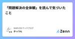
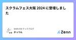
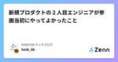
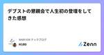
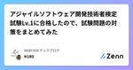

BABYJOB テックブログのフィード
https://zenn.dev/p/babyjob
「すべての人が子育てを楽しいと思える社会」の実現を目指すスタートアップ BABY JOB のテックブログです。
フィード

「問題解決の全体観」を読んで気づいたこと 1
1
BABYJOB テックブログのフィード
はじめに私はエンジニアとしてキャリアを進める中で、問題解決能力を高めたいと強く感じるようになりました。そのために、「問題解決の全体観」という本を手に取り、論理的思考力と抽象思考能力の基礎固めを目指しています。このブログでは、精読して感じたことや実践を通じて得たことを共有していきます。 冒頭私たちが取り巻く問題は、時代の変化とともに難しくなっていて、解決できない事が増えてきています。これは問題解決に使っていた思考方法が古くなってきたからともいえます。ではどうすればよいのか？問題の全体観を正しく捉えつつ、新しい思考方法を学び、戦闘力を高める必要があります。本書では、個人の戦闘...
21時間前

スクラムフェス大阪 2024 に登壇しました
BABYJOB テックブログのフィード
はじめに2024 年 6 月 に開催された スクラムフェス大阪 2024 にスピーカーとして登壇させていただきました。筆者がオンラインで参加した体験レポートになります。 イベント概要Scrum Fest Osaka はスクラムの初心者からエキスパート、ユーザー企業から開発企業、立場の異なる様々な人々が集まる学びの場です。この 2 日間を通じ、参加者同士でスクラムやアジャイルプラクティスについての知識やパッションをシェアするだけでなく、ここで出会ったエキスパートに困りごとを相談することもできます公式サイトより引用開催日：2024年6月21日（金） 〜 6月22日（土）...
21時間前

新規プロダクトの 2 人目エンジニアが参画当初にやってよかったこと 1
BABYJOB テックブログのフィード
はじめに私は現在、保育施設と保護者をつなぐプラットフォーム「えんさがそっ♪」の開発エンジニアとして働いています。このプロジェクトに自分が参画してからそろそろ 2 年が経とうとしています。今回はその振り返りも兼ねて、新規プロダクトの 2 人目エンジニアとして参画した当初、私がどのようなことを意識し、どのような取り組みを行ったのかをお話ししたいと思います。 データメンテナンスなどの運用作業を積極的に引き受けるオンボーディングが終わって最初に行ったことは、運用タスクを積極的に引き受けることでした。リリース初期段階の「えんさがそっ♪」には、よくある管理者用の画面がありませんでした...
4日前

デブストの懇親会で人生初の登壇をしてきた感想 1
BABYJOB テックブログのフィード
はじめにこの記事ではDevelopers Boost2024の懇親会で人生初の登壇を経験させていただいたので、その感想を書いています。初めてのSpeakerパス Developers Boost2024とは「Developers Boost（デブスト）」は、さまざまな媒体でITエンジニアの成長を応援してきた翔泳社が運営する、30歳以下（U30）の若手エンジニアのための技術カンファレンスです。今年のデブストのテーマは、「Be a changer, Be a challenger」。技術革新が著しい今、日々開発に取り組む中で「この先も求められる技術力とは？」と考えることが...
7日前

アジャイルソフトウェア開発技術者検定試験Lv.1に合格したので、試験問題の対策をまとめてみた 1
BABYJOB テックブログのフィード
はじめにアジャイルソフトウェア開発技術者検定試験(以下「アジャイル検定」)のLv.1に合格しました。いい勉強になったので、勉強方法や試験問題の対策と受けた感想について話します。 アジャイル検定とはアジャイル開発のスキルを客観的な尺度で分析・判定するのが、アジャイルソフトウエア開発技術者検定試験です。試験システムとして、CBT(Computer Based Testing)を採用しています。いつでも、どこでも受験することができます。4肢択一スタイルの問題、平均で70%の正解率を得られるよう、難易度を調整しています。合格基準は80％以上の正解率です。公式サイトよりh...
13日前

ふりかえりカンファレンス2024に参加・LT発表してきました
BABYJOB テックブログのフィード
こんにちは！BABYJOB開発部のたかしろ(@takashiro_bj)です。24年04月13日に開催されたふりかえりカンファレンス2024へ参加・LT発表してきましたので、ふりかえり兼ねてイベントレポートです。 ふりかえりカンファレンスとは？https://retrospective.connpass.com/event/304599/ふりかえりカンファレンスは、 ふりかえりを実践している方々、ふりかえりに興味がある方々に向け、マインドセットや新しい手法の提案などに加えて、ワークショップでふりかえりを体験できるカンファレンスです。文字通り、ふりかえりに特化したイベントで...
2ヶ月前
PHP カンファレンス関西 2024 のスタッフをやってみた
BABYJOB テックブログのフィード
はじめに2024 年 2 月に開催された PHP カンファレンス関西 2024 にスタッフとして参加しました。筆者がオフラインとして参加した体験レポートになります。 イベント概要PHP カンファレンス関西は、PHP エンジニア（:PHPer）が PHP や PHP 周辺の技術的知識やノウハウ、体験を共有するための大規模技術カンファレンスです。2011 年から過去 8 回開催されており、毎回その時の PHP 最新情報やトレンドの話題で盛り上がります。関西の PHPer がお互いに情報を交換し、エンジニアとしてレベルアップをする場となるべく、2018 年から 6 年ぶりに開...
3ヶ月前
PHPerKaigi 2024が楽しかったというお話
BABYJOB テックブログのフィード
はじめにPHPerKaigiに初めて参加し、全力で楽しんだというお話をさせてください！なお、本記事は筆者の主観による感想が多く含まれておりますのでご留意ください。 PHPerKaigiについてPHPerKaigi（ペチパーカイギ）は、PHPer、つまり、現在PHPを使用している方、過去にPHPを使用していた方、これからPHPを使いたいと思っている方、そしてPHPが大好きな方たちが、技術的なノウハウとPHP愛を共有するためのイベントです。PHPerKaigi2024公式サイトより引用https://phperkaigi.jp/2024/ day0 前夜祭夕方開始...
4ヶ月前
PHPerKaigi 2024 初参加・初登壇体験レポート
BABYJOB テックブログのフィード
はじめにこの記事では、 PHPerKaigi 2024 に初参加・初登壇した体験記・感想を紹介しております PHPerKaigiとは？PHPerKaigi（ペチパーカイギ）は、PHPer、つまり、現在PHPを使用している方、過去にPHPを使用していた方、これからPHPを使いたいと思っている方、そしてPHPが大好きな方たちが、技術的なノウハウとPHP愛を共有するためのイベントです。PHPerKaigi2024公式サイトより引用https://phperkaigi.jp/2024/ 参加にあたって今回 PHPerKaigi への参加・登壇は初めてというのはタイトルの...
4ヶ月前
PHPerKaigi 2024 に登壇しました
BABYJOB テックブログのフィード
はじめに2024 年 3月 に開催された PHPerKaigi2024 にスピーカーとして登壇させていただきました。筆者がオフラインとして参加した体験レポートになります。 イベント概要PHPerKaigi（ペチパーカイギ）は、PHPer、つまり、現在PHPを使用している方、過去にPHPを使用していた方、これからPHPを使いたいと思っている方、そしてPHPが大好きな方たちが、技術的なノウハウとPHP愛を共有するためのイベントです（原文ママ）開催日 ： 2024年3月7日（木） ～ 3月9日（土）場所 ： 中野セントラルパークカンファレンス & ニコニコ生放送ht...
4ヶ月前
PHP カンファレンス関西 2024 に参加しました ~聴講編~
BABYJOB テックブログのフィード
はじめにこの記事では、筆者が PHP カンファレンス関西 2024 を思いっきり楽しんだことを紹介します。筆者の主観による感想が含まれておりますのでご留意ください。一応 LT 枠で登壇もしてますので、その時の感想はコチラをご覧ください。https://zenn.dev/babyjob/articles/027d4e8621406c イベント概要PHP カンファレンス関西 2024 は地方で行われる PHP の技術者コミュニティによる祭典の関西版です。PHPカンファレンス関西は、PHPエンジニア（:PHPer）がPHPやPHP周辺の技術的知識やノウハウ、体験を共有する...
4ヶ月前
カンファレンス初参加・初登壇な私の「PHPカンファレンス関西 2024」体験レポート
BABYJOB テックブログのフィード
はじめにこの記事では、カンファレンス初参加、初登壇の自分が「PHPカンファレンス関西 2024」 に参加し、登壇を経て経験したことや反省、心境の変化などについて紹介しております。主観による感想が多く含まれておりますのでご留意ください🙇🏻 参加が決まる前のカンファレンスへの印象正直、「怖い」 でした。過去にWeb制作をしていたころはいわゆる怖いもの知らずで、WordPress の WordCamp に参加した経験があります。しかし、最近は怖いものがわかってきたのか「自分なんてまだまだ」という、「怖い」気持ちがあり、なかなかこのようなイベントごとに参加するという行動も取れ...
4ヶ月前
PHP カンファレンス関西 2024 に参加しました ~登壇編~
BABYJOB テックブログのフィード
はじめにこの記事では、筆者が PHP カンファレンス関西 2024 のLT枠で登壇したことについて執筆します。筆者の主観による感想が含まれておりますのでご留意ください。 イベント概要PHP カンファレンス関西 2024 は地方で行われる PHP の技術者コミュニティによる祭典の関西版です。https://2024.kphpug.jp/PHPカンファレンス関西は、PHPエンジニア（:PHPer）がPHPやPHP周辺の技術的知識やノウハウ、体験を共有するための大規模技術カンファレンスです。カンファレンスには、運営実行委員長 @YKanoh65 さんの「関西に PHP ...
5ヶ月前
Java8 から Java17 にバージョンアップしてテキストブロックが使えるようになった
BABYJOB テックブログのフィード
はじめに先日、手ぶら登園では Java8 から Java17 へのバージョンアップを行いました。実行環境は Java17 になりましたが、実際のコードのほとんどは Java8 のままで、これから Java17 の機能を適用していこうという段階です。バージョンアップに際してやったことや苦労したことなどは、プロダクトの Java を 8 → 17 へバージョンアップしたときにやったことに書いているので、合わせてご覧ください！Java17 になって使えるようになった機能の中でも、私的お気に入りを挙げるならこの3つです。recordswitch式テキストブロック今回は上記の...
5ヶ月前
年末に年末らしく過ごす振り返り 〜おすすめの年末習慣〜
BABYJOB テックブログのフィード
はじめにこの記事では、2023 年の年末に 1 年を振り返る取り組みを実施したことを紹介します。私自身がどうしてもやりたくて提案しました。本当にやって良かったです。 イベントの目的1 年の振り返りをやりたかった理由は、タイトルの通り 年末らしい年末を過ごしたかった ためです。これまで、毎年必ずと言っていいほど慌ただしい年末を過ごしていました。そのため、強制的にゆっくりできるイベントとして、振り返り DAY を設立した次第です。 利用したフレームワーク下記の記事を参考にしました。40人のビジネスパーソンが絶賛した「1年の振り返り」完全マニュアル振り返り方法の概...
5ヶ月前
タスク定義が 100 個を超えたら ECS にデプロイできなくなった
BABYJOB テックブログのフィード
ある日 ECS にデプロイできなくなったいつも通り、ECS (AWS Fargate) にデプロイしようとすると、以下のコマンドでエラーになりました。デプロイは GitHub Actions から行っています。// ①最新のタスク定義を取得する$ ecs_app_task_definition_arn=$(aws ecs list-task-definitions \--family-prefix <タスク定義名> \--query "reverse(taskDefinitionArns)[0]" \--output text)// ②最新のタスク...
5ヶ月前
Draft Pull Request と WIP を使い分けて透明性を上げる
BABYJOB テックブログのフィード
開発環境複数のチームでアジャイル開発レビュー環境GitHub を使用レビュアーにアサインされた人以外もレビューに参加できるPull Request 上のやりとりは Slack に通知しており、誰でも閲覧可能 Draft Pull Request のよくない使い方普段の開発では Draft Pull Request を活用しています。Draft Pull Request は作業がまだ途中であり、レビュー可能な状態ではないですよ〜ということを明示したい場面に用いるものです。Draft Pull Request ではマージボタンをクリックできません。作業完了...
6ヶ月前
paths-filter を使ってワークフローのジョブをスキップする
BABYJOB テックブログのフィード
!この記事は BABY JOB Advent Calendar 2023 の 25 日目の記事です。 マージ前にベースブランチの変更の取り込みを必須化手ぶら登園 では GitHub を使って開発を行っており、品質向上のために、マージ前にベースブランチの変更の取り込みを必須化しました。必須化の経緯や方法等はアドベントカレンダーの 12 日目の記事で書いているので、気になった方はご覧ください。CI には GitHub Actions を使っていて、主にバックエンドのテストを行っているので、マージ前にベースブランチの変更の取り込みを必須化する際のステータスチェックとしてもテストを...
6ヶ月前
プロダクトの Java を 8 → 17 へバージョンアップしたときにやったこと
BABYJOB テックブログのフィード
!この記事は BABY JOB Advent Calendar 2023 の 24 日目の記事です。こんにちはー。BABY JOB 株式会社の @mackey0225 です！もうクリスマスイブですよ。年の瀬ですよ。本当にあっという間の一年でした。個人的には、今年は JJUG CCC に春・秋と出れたことは非常に嬉しく、自分の成長に繋がりましたね。そこで今回は JJUG CCC 2023 Fall で話せなかった Java バージョンアップに関する運用面について記事にしようと思います。 執筆の背景先にも書きましたが、2023 年の 11 月に開催された JJUG CC...
6ヶ月前
既存の Web アプリに脆弱性診断を実施するために必要になった実装上の工夫
BABYJOB テックブログのフィード
!この記事は BABY JOB Advent Calendar 2023 の 23 日目の記事です。 はじめに弊社では、定期的に脆弱性診断ツールを使用し、Webアプリケーション（以下Webアプリ）に脆弱性がないか診断しています。脆弱性診断ツールを導入した際、ツール実行対象のWebアプリに対して一部改修を入れる必要があったため、その際の対応に関して記載します。 脆弱性診断ツールとは脆弱性診断ツールとは、こちらの記事で以下のように定義されています。脆弱性診断ツール（サービス）とは、サイバー攻撃を受けやすいウェブシステムに対し、スキャンや模擬攻撃などを行い、そのシステムに...
6ヶ月前